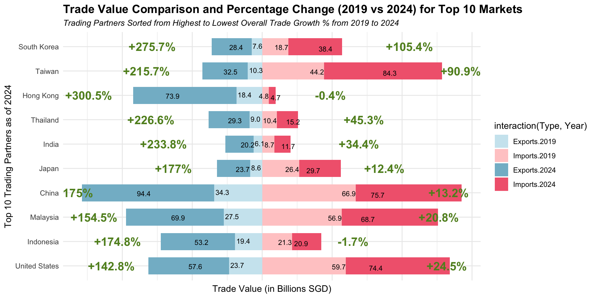

pacman::p_load(tidyverse,readxl,SmartEDA,patchwork,plotly)Take-home Exercise 02: Be Tradewise or Otherwise
1 Overview
1.1 Background
Since Donald Trump assumed the U.S. presidency on January 20, 2025, global trade has been a focal point of economic discussions. Singapore, as a highly open economy, is deeply affected by shifts in international trade policies and global economic trends. Understanding how Singapore’s merchandise trade has evolved since 2015 provides valuable insights into the country’s trade resilience, shifting market dependencies, and economic positioning.
This study focuses on leveraging visual analytics and time-series techniques to explore Singapore’s international trade data. By analyzing historical trade patterns, identifying trends, and applying forecasting methods, this study aims to generate actionable insights into Singapore’s trade performance over the past decade.
1.2 Objectives
The primary objectives of this study are:
Data Visualization Critique & Redesign: Select three existing data visualizations from the dataset’s webpage, critically evaluate their effectiveness, identify strengths and weaknesses, and propose and create improved visual representations.
Time-Series Analysis: Apply appropriate time-series techniques to analyze trends in Singapore’s merchandise trade. Derive meaningful conclusions from the visualizations and time-series analysis, explaining key trade trends, shifts in trade regions, and potential implications for Singapore’s economy.
2 Methodology & R Packages Used
We will follow the outlined methodology flow for this study, starting with data import and data wrangling, and discussion and makeover of selected visualizations and time series analysis.

| Package | Explanation |
|---|---|
| tidyverse | to efficiently manipulate and clean data, utilizing functions from packages like dplyr and tidyr for data wrangling. |
| readxl | allows us to import and work with excel file |
| ggplot2 | to create informative and aesthetically pleasing visualizations, such as histograms and boxplots, to analyze the data |
| patchwork | to combine multiple ggplot2 plots into a cohesive layout, making it easier to present related visualizations side by side |
| SmartEDA | to help summarize dataset by providing insights such as missing values |
| plotly | for creating interactive visualizations like zoom, and hover. |
3 The Dataset
The dataset, Merchandise Trade by Region/Market, is obtained from the Department of Statistics Singapore (DOS) and provides detailed records of Singapore’s international trade. It consists of three Excel tabs: Imports, Domestic Exports, and Re-Exports, capturing monthly trade values (in million SGD) with various countries from January 2003 to January 2025. This dataset enables an in-depth analysis of Singapore’s trade flows, helping to identify key trading partners, shifting trade patterns, and trends in import and export activities over time.
4 Data Preparation
4.1 Importing the Data and Removing Irrelevant Rows
The code chunk below imports MerchanciseTrade.xlsx as three dataframes - imports, exports and reexports- into R environment by using read_xlsx( ) from readxl package. “sheet =” tells which worksheet to read as our dataset contains multiple worksheets.
The Excel sheets also contain irrelevant rows, including data descriptions and footnotes, which need to be removed as we import. Specifically:
Rows 1 to 9 contain metadata and are not part of the actual dataset.
Row 10 contains column headers and should be set as variable names.
Rows 171 to 191 contain footnotes and other non-relevant information that should be excluded.
To ensure a clean dataset, we will remove these rows and set Row 10 as the header.
imports <- read_xlsx("data/MerchandiseTrade.xlsx", sheet = "T1",skip = 9) %>%
slice(1:161)
colnames(imports) <- as.character(imports[1, ]) # Assign first row as column names
imports <- imports[-1, ]exports <- read_xlsx("data/MerchandiseTrade.xlsx", sheet = "T2",skip = 9) %>%
slice(1:161)
colnames(exports) <- as.character(exports[1, ]) # Assign first row as column names
exports <- exports[-1, ]reexports <- read_xlsx("data/MerchandiseTrade.xlsx", sheet = "T3",skip = 9) %>%
slice(1:161)
colnames(reexports) <- as.character(reexports[1, ]) # Assign first row as column names
reexports <- reexports[-1, ]4.2 Checking for Missing values
The ExpData from SmartEDA package provides a quick overview of data types and missing values.
imports %>%
ExpData(type=1) Descriptions Value
1 Sample size (nrow) 160
2 No. of variables (ncol) 266
3 No. of numeric/interger variables 0
4 No. of factor variables 0
5 No. of text variables 266
6 No. of logical variables 0
7 No. of identifier variables 1
8 No. of date variables 0
9 No. of zero variance variables (uniform) 0
10 %. of variables having complete cases 100% (266)
11 %. of variables having >0% and <50% missing cases 0% (0)
12 %. of variables having >=50% and <90% missing cases 0% (0)
13 %. of variables having >=90% missing cases 0% (0)exports %>%
ExpData(type=1) Descriptions Value
1 Sample size (nrow) 160
2 No. of variables (ncol) 266
3 No. of numeric/interger variables 0
4 No. of factor variables 0
5 No. of text variables 266
6 No. of logical variables 0
7 No. of identifier variables 1
8 No. of date variables 0
9 No. of zero variance variables (uniform) 0
10 %. of variables having complete cases 100% (266)
11 %. of variables having >0% and <50% missing cases 0% (0)
12 %. of variables having >=50% and <90% missing cases 0% (0)
13 %. of variables having >=90% missing cases 0% (0)reexports %>%
ExpData(type=1) Descriptions Value
1 Sample size (nrow) 160
2 No. of variables (ncol) 266
3 No. of numeric/interger variables 0
4 No. of factor variables 0
5 No. of text variables 266
6 No. of logical variables 0
7 No. of identifier variables 1
8 No. of date variables 0
9 No. of zero variance variables (uniform) 0
10 %. of variables having complete cases 100% (266)
11 %. of variables having >0% and <50% missing cases 0% (0)
12 %. of variables having >=50% and <90% missing cases 0% (0)
13 %. of variables having >=90% missing cases 0% (0)Based on the results, all three data frames contain 100% complete cases, indicating the absence of missing values.
4.3 Renaming Columns and Converting Data Type
Initially, all variables in the dataset are stored as character data types. However, since all columns (except for Data Series) represent trade values in millions of SGD, they should be converted to numeric format. Additionally, we will rename the Data Series column to Markets for better readability.
The column names represent dates in the “YYYY MMM” format (e.g., "2025 Jan", "2024 Dec"). To analyze the data effectively as a time series, we will need to :
Reshape the dataset from wide to long format – Instead of having separate columns for each month, we will structure the data so that each row represents a month and its corresponding trade value. A long format is particularly beneficial when working with ggplot2 because it simplifies faceting and makes data manipulation and visualization more flexible.
Convert the date column to a proper date format (
YYYY-MM) – This ensures consistency and compatibility with time series analysis and visualization.
imports <- imports %>%
rename(Markets = `Data Series`) %>%
mutate(across(-Markets, as.numeric)) %>%
pivot_longer(cols = -Markets, names_to = "Date", values_to = "Trade_Value")%>%
mutate(Date = parse_date_time(Date, orders = "ym"))%>%
mutate(Date = as.Date(Date)) %>%
arrange(Date)
head(imports)# A tibble: 6 × 3
Markets Date Trade_Value
<chr> <date> <dbl>
1 Total All Markets 2003-01-01 18539.
2 America 2003-01-01 2385.
3 Antigua And Barbuda 2003-01-01 0
4 Argentina 2003-01-01 2.3
5 Bahamas 2003-01-01 19.2
6 Bermuda 2003-01-01 0 exports <- exports %>%
rename(Markets = `Data Series`) %>%
mutate(across(-Markets, as.numeric))%>%
pivot_longer(cols = -Markets, names_to = "Date", values_to = "Trade_Value")%>%
mutate(Date = parse_date_time(Date, orders = "ym"))%>%
mutate(Date = as.Date(Date)) %>%
arrange(Date)reexports <- reexports %>%
rename(Markets = `Data Series`) %>%
mutate(across(-Markets, as.numeric))%>%
pivot_longer(cols = -Markets, names_to = "Date", values_to = "Trade_Value")%>%
mutate(Date = parse_date_time(Date, orders = "ym"))%>%
mutate(Date = as.Date(Date)) %>%
arrange(Date)4.4 Grouping Region or Country
The dataset contains rows that represent regions (e.g., “Total All Market”, “America”, “Asia”, “Oceania”, “Europe”, and “Africa”) alongside rows for individual countries. To facilitate analysis, we will add a new column (RegionorCountry) to classify each row as either a region or a country.
This classification allows us to easily filter out the region rows from analyses focused on country-level data, such as when creating visualizations or performing modeling tasks.
If we choose to exclude the region rows for specific analyses, we can filter them out using the newly created column, keeping only the country data for detailed exploration.
# Adding new coulumn
imports <- imports %>%
mutate(RegionorCountry = ifelse(Markets %in% c("Total All Markets", "America", "Asia", "Oceania", "Europe", "Africa"),
"Region", "Country"))
head(imports)# A tibble: 6 × 4
Markets Date Trade_Value RegionorCountry
<chr> <date> <dbl> <chr>
1 Total All Markets 2003-01-01 18539. Region
2 America 2003-01-01 2385. Region
3 Antigua And Barbuda 2003-01-01 0 Country
4 Argentina 2003-01-01 2.3 Country
5 Bahamas 2003-01-01 19.2 Country
6 Bermuda 2003-01-01 0 Country # Adding new coulumn
exports <- exports %>%
mutate(RegionorCountry = ifelse(Markets %in% c("Total All Markets", "America", "Asia", "Oceania", "Europe", "Africa"),
"Region", "Country"))# Adding new coulumn
reexports <- reexports %>%
mutate(RegionorCountry = ifelse(Markets %in% c("Total All Markets", "America", "Asia", "Oceania", "Europe", "Africa"),
"Region", "Country"))4.5 Combining into One Dataframe
After all our data preparation, we can combine the three newly prepared datasets into a single unified dataframe. This step allows us to work with the data as a whole while preserving the distinction between the different trade categories. To achieve this, we use the bind_rows() function to stack the datasets and add a new column, Type, which indicates whether a row corresponds to Imports, Exports, or Re-Exports.
This combined dataframe will be more convenient for analysis, as it enables us to analyze trade data across different categories while keeping the data structured.
imports <- imports %>%
mutate(Type = "Import")
exports <- exports %>%
mutate(Type = "Export")
reexports <- reexports %>%
mutate(Type = "Re-Export")
# Combine all three datasets using bind_rows()
trade <- bind_rows(imports, exports, reexports)
head(trade)# A tibble: 6 × 5
Markets Date Trade_Value RegionorCountry Type
<chr> <date> <dbl> <chr> <chr>
1 Total All Markets 2003-01-01 18539. Region Import
2 America 2003-01-01 2385. Region Import
3 Antigua And Barbuda 2003-01-01 0 Country Import
4 Argentina 2003-01-01 2.3 Country Import
5 Bahamas 2003-01-01 19.2 Country Import
6 Bermuda 2003-01-01 0 Country ImportNow, we can proceed to keep a subset of the dataframe on country-level data by excluding the regions.
# Filter only countries (exclude regions)
country <- trade %>% filter(RegionorCountry == "Country")5 Three Visualizations & Their Makeovers
5.1 Visualization 1: Barchart of Total Merchandise Trade, 2020 - 2024
The barchart presents the total merchandise trade for the years 2020 through 2024, with each year showing two bars—representing export and import values. There are bubbles beside the bars indicating the combined total trade value for each year. A textbox also notes a 6.6% increase in trade in 2024.
5.1.1 Pros and Cons
Pros:
The color coding by year makes it easier to distinguish between the different years, providing clarity at a glance.
Clear trade value labels in each bar help viewers quickly identify the trade volume for both exports and imports.
The inclusion of total trade values beside each year simplifies interpretation and avoids requiring viewers to manually sum exports and imports.
Cons:
While the bar chart shows year-by-year comparisons, it does not explicitly illustrate trends over time.
The textbox stating “Increased 6.6% in 2024” is not effectively supported by the barchart itself. The viewer is left wondering what exactly increased and from which point the 6.6% growth is being measured (compared to 2023 or from the beginning of 2020).
The description does not explicitly explain that “exports” include “re-exports,” which could lead to confusion for viewers since exports are higher than imports every year.
The total trade value for each year is not immediately clear, as it is displayed separately in a bubble, which might make it harder for viewers to correlate the textbox value with the corresponding bars.
The use of container-shaped bars might look aesthetically appealing but adds unnecessary visual elements that do not enhance data interpretation.
5.1.2 Makeover
To improve the visualization, several changes were made:
A line chart was added alongside the bar chart to show percentage changes in trade over the years, providing context to fluctuations. This highlights trends, such as the recovery from a sharp decline in 2023 (-11.7%), emphasizing that the 6.6% increase in 2024 is part of a broader recovery.
The linechart also displays the total trade value on top of the bars to make it easy to follow.
A footnote was added to clarify that “exports include re-exports.” This is an important piece of information that was missing in the original description, and its inclusion ensures the viewer has a complete understanding of what is meant by “exports” and why it might be higher than imports.
country <- country %>%
mutate(Year = format(as.Date(Date), "%Y"))
# Calculate total trade value for export, import, and re-export (from 2019 to 2024)
summary_data <- country %>%
filter(Type %in% c("Export", "Import", "Re-Export"), Year %in% c("2019", "2020", "2021", "2022", "2023", "2024")) %>%
mutate(Trade_Value = as.numeric(Trade_Value)) %>%
mutate(Type = ifelse(Type == "Re-Export", "Export", Type)) %>%
group_by(Year, Type) %>%
summarise(Total_Trade_Value = sum(Trade_Value, na.rm = TRUE)) %>%
mutate(Total_Trade_Value_Billions = Total_Trade_Value / 1000, # Convert to billions
Label = paste0("$", round(Total_Trade_Value_Billions, 1)))
# Calculate the total trade value for Export, Import, and Re-Export combined for each year
total_trade_by_year <- summary_data %>%
group_by(Year) %>%
summarise(Total_Trade_Value_Billions = sum(Total_Trade_Value_Billions, na.rm = TRUE))
# Get the 2019 total trade value for calculating the 2020 percentage change
total_trade_2019_value <- total_trade_by_year$Total_Trade_Value_Billions[total_trade_by_year$Year == "2019"]
# Calculate percentage change, keeping 2019 for reference
total_trade_by_year <- total_trade_by_year %>%
mutate(Percentage_Change = (Total_Trade_Value_Billions / lag(Total_Trade_Value_Billions) - 1) * 100)
# Manually compute the 2020 percentage change using 2019's value
total_trade_by_year[total_trade_by_year$Year == "2020", "Percentage_Change"] <-
(total_trade_by_year$Total_Trade_Value_Billions[total_trade_by_year$Year == "2020"] - total_trade_2019_value) / total_trade_2019_value * 100
# Remove 2019 from the dataset to only plot 2020-2024
total_trade_by_year <- total_trade_by_year %>%
filter(Year >= 2020)
summary_data <- summary_data %>%
filter(Year >= 2020)
summary_data$Year <- as.integer(summary_data$Year)
total_trade_by_year$Year <- as.integer(total_trade_by_year$Year)
# Define limits for both axes
ylim.prim <- c(0, max(summary_data$Total_Trade_Value_Billions, na.rm = TRUE))
ylim.sec <- c(-50, 25)
# Transformation coefficients for scaling percentage change
b <- diff(ylim.prim) / diff(ylim.sec)
a <- ylim.prim[1] - b * ylim.sec[1]
ggplot() +
# Bar chart for Total Trade Value in Billions
geom_bar(data = summary_data, aes(x = Year, y = Total_Trade_Value_Billions, fill = Type),
stat = "identity", position = "dodge") +
# Line chart for Percentage Change, scaled appropriately
geom_line(data = total_trade_by_year, aes(x = Year, y = a + Percentage_Change * b),
color = "#e79251", size = 1) +
geom_point(data = total_trade_by_year, aes(x = Year, y = a + Percentage_Change * b),
color = "#e79251", size = 3) +
# Add labels for the bar chart
geom_text(data = summary_data, aes(x = Year, y = 0, label = Label, group = Type),
position = position_dodge(width = 0.9), color= "#737373", vjust = -4, size = 5) +
# Label the line chart with percentage values
geom_text(data = total_trade_by_year, aes(x = Year, y = a + Percentage_Change * b,
label = paste0(round(Percentage_Change, 1), "%")),
color = "black", vjust = -0.5, size = 5) +
# Add a red dotted line at 0% percentage change
geom_hline(yintercept = a, color = "#ff9c07", linetype = "dotted", size = 1) +
# Add total value labels on the line chart
geom_text(data = total_trade_by_year, aes(x = Year, y = a + Percentage_Change * b,
label = paste0("$", round(Total_Trade_Value_Billions, 1), " bil")),
color = "#004aad", vjust = 1.5, size = 5) +
# Set the primary Y-axis (Total Trade Value) and secondary Y-axis (Percentage Change)
scale_y_continuous(
name = "Total Trade Value (in Billions)",
sec.axis = sec_axis(~(. - a) / b, name = "Percentage Change (%)")
) +
scale_x_continuous("Year", breaks = 2020:2024) +
# Customize the fill colors for Export and Import
scale_fill_manual(values = c("Export" = "#b4ceff", "Import" = "#cfe7af")) +
# Add title and axis labels
labs(
title = "Annual Exports and Imports with Percentage Change in Total Trade Value (2020-2024)",
x = "Year",
y = "Total Trade Value (in Billions)",
caption = "*Note: Exports include Re-exports",
subtitle = "Line chart shows total trade value"
) +
theme_minimal() +
# Adjust the size of the title and axis titles
theme(
plot.title = element_text(size = 18, face = "bold"),
axis.title.x = element_text(size = 16, face = "bold"),
axis.text.x = element_text(size = 12),
axis.title.y = element_text(size = 16, face = "bold"),
axis.text.y = element_text(size = 12),
plot.margin = margin(t = 20, r = 10, b = 10, l = 10)
)5.2 Visualization 2: Bubble Chart of Merchandise Trade Performance with Major Trading Partners, 2024
This bubble chart provides a visual comparison of Singapore’s exports and imports with its major trading partners in 2024. The x-axis represents total export values, while the y-axis represents total import values for each country. The size of each bubble corresponds to the total trade value, with larger bubbles indicating higher overall trade volume. Each bubble is labeled with the respective country name and total trade value.
A distinctive feature of this chart is its background, which is divided diagonally into two colors: blue and green. The blue section represents countries where Singapore’s exports exceed its imports, while the green section highlights countries where Singapore imports more than it exports.
5.2.1 Pros and Cons
Pros:
- A clear distinction between trade surpluses and deficits is made using background colors, simplifying the identification of Singapore’s trade balance with each country.
- Varying bubble sizes effectively represent the scale of total trade with each country, enabling quick assessments of trading partners’ significance.
- Using exports on the x-axis and imports on the y-axis provides an intuitive way to understand trade relationships. Countries positioned above the diagonal line represent a trade deficit (more imports), while those below indicate a trade surplus (more exports).
Cons:
- The EU is represented as a single entity, making comparisons with individual countries difficult due to the aggregation of trade data from multiple member states.
- The use of different bubble colors for each country does not carry any specific meaning, which can be misleading or add unnecessary complexity.
- The chart displays total trade value but doesn’t show exact export and import values immediately, requiring further interaction to access detailed information. Since Singapore is a major hub for re-exports, combining exports and re-exports might obscure insights into Singapore’s domestic trade strength.
5.2.2 Makeover
To improve the visualization, several modifications have been made.
The top 10 trading countries have been selected instead of using the EU as a single entity. This allows for a more consistent comparison between individual countries.
Instead of using background colors to distinguish trade surpluses and deficits, the bubble colors themselves now indicate whether Singapore exports more than it imports to the particular country (orange) or imports more than it exports (green). This change provides a clearer and more intuitive representation of the trade balance without relying on the background color.
Tooltip enhancements provide clearer data and engagement when hovering over a bubble. In addition to total trade value, the exact re-export, export and import values for each country are now displayed, making it easier to grasp the trade breakdown instantly.
top_10_markets_2024 <- country %>%
filter(Year == 2024) %>%
group_by(Markets) %>%
summarise(
Total_Import_Value = sum(Trade_Value[Type == "Import"]),
Total_ReandExport_Value = sum(Trade_Value[Type %in% c("Export", "Re-Export")]),
Total_Export_Value = sum(Trade_Value[Type == "Export"]),
Total_ReExport_Value = sum(Trade_Value[Type == "Re-Export"]),
Total_Trade_Value = Total_Import_Value + Total_Export_Value + Total_ReExport_Value
) %>%
arrange(desc(Total_Trade_Value)) %>%
head(10)%>%
mutate(Markets = ifelse(Markets == "Korea, Rep Of", "South Korea", Markets))
# Create a new variable to color the bubbles
top_10_markets_2024$BubbleColor <- ifelse(top_10_markets_2024$Total_ReandExport_Value < top_10_markets_2024$Total_Import_Value, "Imports from
that country exceeds
exports to
that country", "Exports to
the country exceeds
imports from
that country")
# Bubble plot
p <- ggplot(top_10_markets_2024, aes(y = Total_Import_Value / 1000,
x = Total_ReandExport_Value / 1000,
size = Total_Trade_Value / 1000,
label = Markets,
text = paste(
"Total Export to", Markets, ": S$", round(Total_Export_Value / 1000, 1), "Bil",
"\nTotal Re-Export to", Markets, ": S$", round(Total_ReExport_Value / 1000, 1), "Bil",
"\nTotal Import from", Markets, ": S$", round(Total_Import_Value / 1000, 1), "Bil",
"\nTotal Trade Value: S$", round(Total_Trade_Value / 1000, 1), "Bil"
),
fill = BubbleColor)) +
# Bubbles
geom_point(alpha = 0.7, shape = 21, color = "black") +
geom_text(vjust = -1, size = 3) +
scale_fill_manual(values = c("Imports from
that country exceeds
exports to
that country" = "#9cc567", "Exports to
the country exceeds
imports from
that country" = "#e79251")) + # Define colors
scale_size_continuous(range = c(5, 30),
name = "Total Trade Value (Billion $)",
breaks = c(50, 100, 150),
labels = c("50", "100", "150")) +
scale_x_continuous(limits = c(0, 100),
breaks = seq(0, 100, by = 10),
labels = paste(seq(0, 100, by = 10))) +
scale_y_continuous(limits = c(0, 100),
breaks = seq(0, 100, by = 10),
labels = paste(seq(0, 100, by = 10))) +
# Title and axis labels
labs(title = "Top 10 Merchandise Trade Markets (2024)",
y = "Total Import Value (Billion $)",
x = "Total Export Value (Billion $)") +
theme_minimal() +
# Removing legend
guides(size = guide_none(), color = guide_none())
# Interactivity-Show Trade value on hover
ggplotly(p, tooltip = "text")5.3 Visualization 3: Major Trading Partners, 2023
The chart displays a dual-bar comparison of trade data for the top 10 countries by total trade value. On the left side, it shows the sum of exports in 2023 compared to 2019 (including re-exports), while the right side shows the sum of imports in 2023 compared to 2019.
5.3.1 Pros and Cons
Pros:
The dual bar chart clearly contrasts exports and imports for each country, making it easy to identify shifts in trade patterns and allows for direct comparison of export and import trends over the two years for each of the leading trade partners
Color coordination among different country labels and bars helps in associating the country with the bars.
Cons:
Including the EU and ASEAN as entities, rather than individual countries, makes it difficult to compare them directly with other countries, as they represent regional groups rather than single trade partners.
The countries appear ranked by total trade value for 2023, but it’s not immediately clear.
The labels only appear far outside the bars making it hard to follow and there is a repetitive use of the labels 2023 and 2019.
5.3.2 Makeover
Several modifications have been made to improve the visualization and provide a clearer comparison.
Exports & Imports are placed side-by-side (not separated) to immediately shows if Singapore has a trade surplus or deficit with each major trade partner.
2023 data was replaced by 2024 data since it is most recent data and darker color to emphasize it.
Trading partners were sorted by overall Trade Growth percentage from 2019 to 2024 to shows which partners are increasing/decreasing in importance and added a small text at the top to explain this. Percentage growth labels (e.g.,
+12%,-5%) were also added beside bars to highlight changes. Now, it can be seen that South Korea has an increasing importance over the years with the highest growth in import.Value labels are now inside of the bars for better readability at a glance.

# find top 10 markets for 2019
top_10_markets_2019 <- country %>%
mutate(Markets = ifelse(Markets == "Korea, Rep Of", "South Korea", Markets))%>%
filter(Year == 2019, Markets %in% top_10_markets_2024$Markets) %>%
group_by(Markets) %>%
summarise(
Total_Import_Value = sum(Trade_Value[Type == "Import"], na.rm = TRUE),
Total_ReandExport_Value = sum(Trade_Value[Type %in% c("Export", "Re-export")], na.rm = TRUE),
Total_Trade_Value = Total_Import_Value + Total_ReandExport_Value
) %>%
arrange(match(Markets, top_10_markets_2024$Markets))
# Calculate percentage change
percentage_change <- top_10_markets_2024 %>%
left_join(top_10_markets_2019, by = "Markets", suffix = c(".2024", ".2019")) %>%
mutate(
Import_Change = (Total_Import_Value.2024 - Total_Import_Value.2019) / Total_Import_Value.2019 * 100,
Export_Change = (Total_ReandExport_Value.2024 - Total_ReandExport_Value.2019) / Total_ReandExport_Value.2019 * 100
) %>%
select(Markets, Import_Change, Export_Change)
# Merge data
dual_chart_data <- bind_rows(
top_10_markets_2019 %>%
mutate(Year = "2019"),
top_10_markets_2024 %>%
mutate(Year = "2024")
) %>%
pivot_longer(cols = c(Total_Import_Value, Total_ReandExport_Value),
names_to = "Type", values_to = "Value") %>%
mutate(Value = ifelse(Type == "Total_ReandExport_Value", -Value, Value),
Type = ifelse(Type == "Total_Import_Value", "Imports", "Exports"))
dual_chart_data <- dual_chart_data %>%
left_join(percentage_change, by = "Markets")
color_mapping <- c("Exports.2019" = "#cde7f0", "Exports.2024" = "#83bace",
"Imports.2019" = "#ffcccc", "Imports.2024" = "#f2677d")
ggplot(dual_chart_data, aes(x = reorder(Markets, Import_Change + Export_Change), y = Value, fill = interaction(Type, Year))) +
geom_bar(stat = "identity", position = position_stack(reverse = TRUE), width = 0.7) +
scale_y_continuous(labels = abs) + # Keep labels positive
labs(title = "Trade Value Comparison and Percentage Change (2019 vs 2024) for Top 10 Markets",
subtitle = "Trading Partners Sorted from Highest to Lowest Overall Trade Growth % from 2019 to 2024",
x = "Top 10 Trading Partners as of 2024",
y = "Trade Value (in Billions SGD)") +
theme_minimal() +
scale_fill_manual(values = color_mapping) +
coord_flip() +
#Trade value labels for each bar
geom_text(aes(label = ifelse(Type == "Exports",
scales::comma(abs(Value) / 1000, accuracy = 0.1),
scales::comma(Value / 1000, accuracy = 0.1))),
position = position_dodge(width = 0.6),
size = 3, color = "black",
hjust = ifelse(dual_chart_data$Year == "2024" & dual_chart_data$Type == "Exports", -0.5,
ifelse(dual_chart_data$Year == "2019" & dual_chart_data$Type == "Exports", -0.1,
ifelse(dual_chart_data$Year == "2024" & dual_chart_data$Type == "Imports", -0.2,
1))),
vjust = ifelse(dual_chart_data$Year == "2024" & dual_chart_data$Type == "Exports", 1,
ifelse(dual_chart_data$Year == "2019" & dual_chart_data$Type == "Exports",-0.7,
ifelse(dual_chart_data$Year == "2024" & dual_chart_data$Type == "Imports", 2,
0.3))))+
# Percentage Change label for Imports
geom_text(data = dual_chart_data %>% filter(Type == "Imports" & Year == "2024") %>%
group_by(Markets) %>%
slice_tail(n = 1),
aes(label = ifelse(Import_Change >= 0,
paste0("+", round(Import_Change, 1), "%"),
paste0(round(Import_Change, 1), "%"))),
hjust = -1.5,
vjust = 0.5,
size = 5,
color="#608e24",
fontface = "bold") +
# Percentage Change label for Exports
geom_text(data = dual_chart_data %>% filter(Type == "Exports" & Year == "2024") %>%
group_by(Markets) %>%
slice_tail(n = 1),
aes(
label = ifelse(Export_Change >= 0,
paste0("+", round(Export_Change, 1), "%"),
paste0(round(Export_Change, 1), "%"))),
hjust = 2,
vjust = 0.5,
size = 5,
color = "#608e24",
fontface = "bold") +
theme(plot.title = element_text(size = 14, face = "bold"),
plot.subtitle = element_text(size = 10, face = "italic"),
axis.text.x = element_blank())